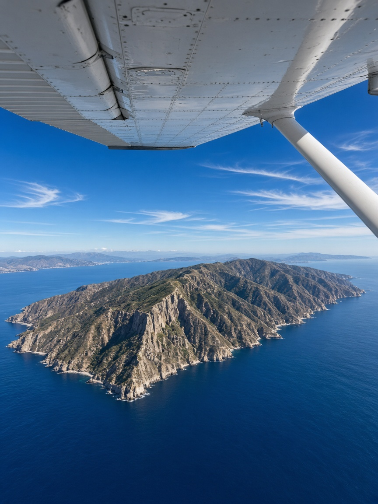
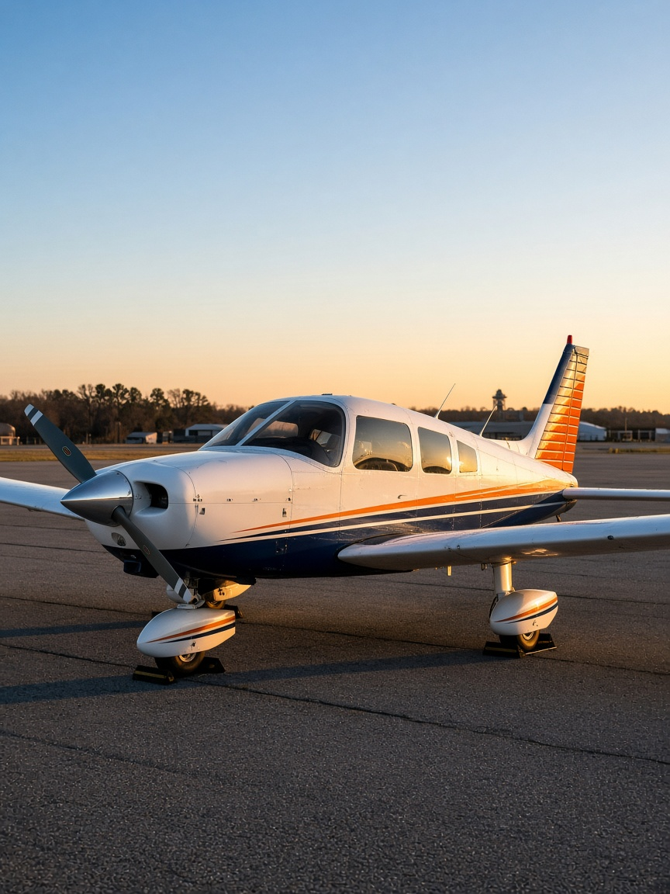

Flight
$295 / hour
Instruction + fuel + aircraft. One number for the lesson in the 182.
John Wayne Airport · SNA · Orange County
Sam Marino, CFI. More than six years of professional instruction. Part 61 training from John Wayne Airport, with high-performance time in a Cessna 182 while you train — not after.

The standard
Marino Aviation is built for dedicated students with a strong work ethic. Sam is an experienced, professional instructor and a strong pilot in his own right: several hundred hours of complex time, and a teaching approach shaped by training with eight CFIs.
That breadth matters. Different instructors leave different marks. Sam took the best of those eight and turned it into a clear, demanding way to teach — the kind of instruction serious private-pilot and add-on students look for at SNA.
He does not take every student. He takes the ones who will do the work.


The airplane
You train in a Cessna 182. That means useful load, real performance, and high-performance experience while you are still building the certificate — a sharper preparation than living entirely in a trainer and hoping the 182 comes later.
Lessons operate from John Wayne Airport, with the Southern California airspace, coastline, and desert training areas that make Orange County one of the most demanding — and useful — places to learn to fly.
Training is structured, but it is built around the student in the seat — proficiency, judgment, and the ACS, not seat time for its own sake.
Show up prepared. Brief honestly. Fly the airplane. Debrief without theater. That is the standard from lesson one.
Rates
Flight time is a single flat rate: instruction, fuel, and aircraft together. Ground is billed separately.
Flight
$295 / hour
Instruction + fuel + aircraft. One number for the lesson in the 182.
Ground
$55 / hour
Briefings, knowledge, and the work that makes the next flight count.
A deposit is required to hold a lesson. Cancel free of charge up to 24 hours before. Inside 24 hours, the deposit is forfeited.
Start here
Tell Sam where you are in training, what certificate you are after, and when you can fly. Booking software is coming; until then, email is the door.
From the airplane